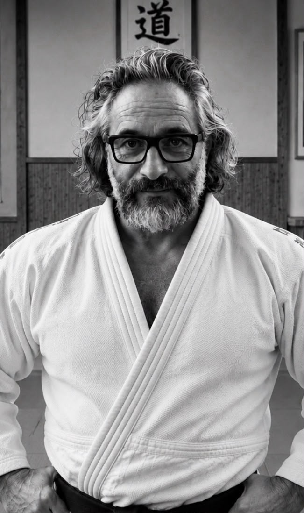

Serge Colin
Judo • Ceinture noire 2ᵉ Dan
Passionné de judo et engagé dans la progression de ses élèves, Serge transmet un judo technique, dynamique et exigeant. Sur le tatami, il accompagne chaque judoka dans le développement de sa technique, de sa condition physique et de son mental, du débutant au compétiteur.